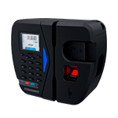

Hexa
O primeiro relógio ponto a ser homologado pelo Inmetro.
O primeiro relógio ponto a ser homologado pelo Inmetro.
Relógio de ponto eletrônico homologado pelo MTE e certificado pelo Inmetro.
Relógio de Ponto Cartográfico ideal para pequenas empresas.
Relógio de Ponto cartográfico. O melhor custo-benefício que a Henry oferece.
Relógio de ponto eletrônico homologado pelo MTE e certificado pelo Inmetro.
Baseado na portaria n° 373/2011. sistema eletrônico alternativo de marcação de ponto.
Relógio de ponto eletrônico homologado pelo MTE e certificado pelo Inmetro.
Controle de ponto cartográfico inovador. Ideal para pequenas empresas.